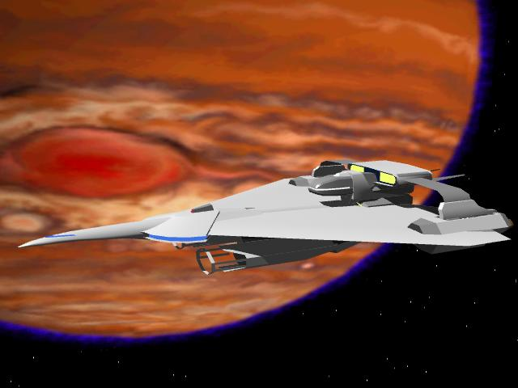

機動アイドル ミルキー・エンジェル ２
よっすぃー 作
第２章 「宇宙です。広いです。不当です！」
１
「…………ねぇ…………」
優希が不満一杯に尋ねる。
「なに〜っ？」
のほほんとミサキが答える。
シルフィードが無事に地球引力圏を脱出し、今回随行する４隻の艦隊と合流して、目指す目的地に進む頃。ブリッジ担当から解放された優希は再びミサキの個室にいた。
不満いっぱいの顔で。
「これ、なんとかならないの？」
語尾に刺を立てながら優希がミサキに講義する。
「これって、なんのこと？ お姉さん、分からない」
とぼけた口調で答えるミサキ。
「この服だよ！」
着ている服を指さしながら優希が怒鳴る。
彼が着ているのは、ネイビーグレーのスーツに膝上丈のタイトスカート。言うまでもなく連邦宇宙軍の女性士官服である。
「今日の勤務はもう終わりなんでしょ？ だったらこれ以上女装を強要しないで、ボクの服を返してよ！」
「返してって言われたって、あなたの服はクリーニングに出しているから、ダメなものはダメよ」
ミサキの答えは、相変わらず無理・ダメの一点張り。その姿勢は頑固といってもいい部類に入るだろう。
「あれからもう五時間も経っているんだよ。いい加減乾いているでしょう？」
「別に良いじゃない。今日１日くらいその格好でも」
「嫌だよ！」
「我慢してよ」
「絶対、ヤダ！」
「そこをなんとか」
「嫌だってば」
「お願いだから我慢してよ」
「我慢するって、いつまで？」
ふてくされながら優希が尋ねる。
「多分ずっとじゃない？」
「へっ？」
いつの間にそこにいたのやら。ちょっと大きめな紙袋を持って、涼子が部屋の入り口で立っていた。
「涼子!?」
「それ、どういう意味ですか？」
たまらず優希が聞き返す。
「どういう意味って……これじゃぁ、着られないわよね」
紙袋からある物体を取りだしひらひらさせる。どう見てもボロ切れの塊だが、どこかで見覚えのある布切れだった。
まさか…………
優希の背筋に冷や汗が流れる。
「全自動のクリーニングマシンに入れて、一体どうやったらこんな風になるのかしらね？」
その言葉の意味するもの。
「あああっ！ それっ、ボクの服！」
泣こうが叫ぼうがもう遅い。優希の服はミサキの手によって、無惨にも産業廃棄物に成り下がっていた。
「ミサキに渡した時点でこうなるのは必然よ。この子、料理の腕は絶品だけど、それ以外の家事はからきしダメというか、才能の片鱗すらないもの」
「りょ、涼子〜ぅ。なにもそこまで言わなくてもいいでしょう！」
「あら、事実じゃない」
ボロ切れを揺らしながら涼子が言う。
「まぁ、その、たまにはそんなこともあるわよ。たまによ、たまにね。ちょっとした手違いじゃないの」
しどろもどろにミサキが弁明する。目の前に破壊され尽くされた服があるだけに、説得力が弱い。
「ふ〜ん、手違いねぇ……」
意味深なアルカイックスマイル。優希には涼子が判決を言い渡す前の裁判官のように見えた。
「そ、そう。手違いなのよ、手違い。手違い、手違い、手違い……………」
だんだん語尾が小さくなっていく……何故だ？
「今回は手違いなのね。で、今までのこれらはどうなのかしら？」
すたすたと部屋に入り込み、壁際のクローゼットに手をかける。
「ちょ、ちょっとまって！」
青くなったミサキの制止を無視して、涼子がクローゼットの扉に手をかけると、「どどど」という音と共に、訳のわからない物体が雪崩のように落ちてきた。
「！！！」
事前に察知していたミサキと涼子は難を逃れていたが、なんの予備知識もない優希は得体の知れない雪崩に飲み込まれてしまった。
「ぷはっ」
どうにかこうにか物体を掻き分けて表に顔を出す。きょろきょろと左右を見回し「一体なにがあったんだ？」という表情を作る。
そこはもう「こざっぱりした女の子の部屋」から状況が一変していた。様々な本や小物が雑然と折り重なり、某埋立地か廃棄物処理場のような有様になっていた。
「あーぁ、ひどい目に遭っちゃって。可哀相な優希クン」
被害にあった優希を見ずに、ミサキの方を向きながらわざとらしく涼子が言う。その口調が妙に芝居がかっているのは気のせいだろうか。
「ちょっと涼子。優希クンになんてことするのよ！」
「なんてことするのって？ そもそも原因を作ったのはミサキのクローゼットじゃない。アンタの「片付ける」って単語は、「押入れに突っ込む」と同義語なんだもん。よくもまぁクローゼットの収納限界を超えて、これだけ押し込めたもんねぇ」
感心半分、呆れ半分で涼子が肩をすくめる。この一面の雑物の海を見れば、ミサキに家事能力が備わっていないことは一目瞭然だ。理論整然と反論され、当のミサキはぐうの音も出ない。
「これで解った、優希クン？ キミはもう地球に帰るまで、その格好で過ごさなくちゃいけないのよ。大丈夫、お姉さんが悪いようにしないから」
さっきまでのニヤニヤ笑いとは一変。きりりとした表情で涼子が優希を説得する。が、締まった表情にもかかわらず、目尻は何故か下がっていた。
「涼子、アンタ。なにかワタシに隠しているわね？」
含むような涼子の口調を察知して、ミサキが反目する。
「人聞きの悪いこと言わないでよ。私はそんなやましい事なんか考えちゃいないわよ。ただちょっと……」
「ただちょっと、なによ？」
「せっかくの逸材。このまま放っておくことは無いでしょう？」
「逸材って、優希クンのこと？」
「当然。今の髪型でもボーイッシュでいいけれど、これだけ整ったフェイスなら、もうちょっと長い髪のほうが似合うと思わない？」
絶妙のタイミングでセミロングのかつらを取り出す。というより、初めから狙っていたとしか考えられない。
「思わない！ 思わない！」
優希は即座に否定するが、彼の意見は求めてなく、あっさりと黙殺される。
「う〜ん。いいかもしれない」
代わりにミサキが呟く。
「でしょ？ そうしたらメンバー候補生として、堂々と公開できるし」
「それ、悪くないわね」
「でしょう。決まりね」
「やだよ」
「ダメ。これは上官命令なの！」
そう言うと、問答無用。ふたりの上官によって強制的にかつらを被された。
「ほらこれで、美少女度が更にアップ♪」
再度髪を整える。そして……
うっ！ ふたりとも一瞬目を見開く。
「か、可愛い過ぎるわ。これはもう、凶器といっていいかも……」
「ど、同感ね。そこいらのアイドルなんて目じゃないわ」
自分たちの立場も忘れて、涼子とミサキが好き放題はやしたてる。もっとも優希にしてみれば、そんなこと言われても全然嬉しくない。なにが悲しゅうて大の男が女装させられた上に、皆の前にさらし者にならなければいけないのか？
などと、至極もっともなことを考えていた優希だったが、ふたりの考えは優希の予想を遙かに超えていた。
「と、いう訳で、みんなにも大公開♪」
両腕を取られて引っ張り出され、兵員食堂改めブリーティングルーム、更に改め休息室なる部屋に放り出されたのだ。
そこにいたのは、言わずと知れたミルキー・エンジェルのメンバーたち。長身、小柄。グラマーやスレンダーなど、タイプこそいろいろ異なるが、連邦全軍からの選りすぐりだけあって、みんな相当な美人だ。
見渡す限り美女ばかりの中に、優希を放り込んだというのに違和感が全くない。その異常なシチュエーションに舌を巻きつつも、涼子は叩き売りの口上よろしく、優希の紹介を始めた。
「さーて。みんな、お立合い！ ブリッジにいた雪江とアンナはもう知っていると思うし、噂は既に届いているわね？ 彼……ううん。この容姿にこの美貌で、男の子だなんて言ったら、神への冒涜ね。この子が沖田優希クン。リーダーのミサキが直々にスカウトしてきた逸材よ」
これで服装がランニングシャツに腹巻だったら、的屋の口上そのものだろう。安っぽいチェックのスーツにトランクを持っていないことが、つくづく惜しまれる。
「涼子、かっこいぃ！」「ひゅーひゅー」
たちまち湧き上がる姦しい喚声。世間と隔離された艦内で、みんな新しい話題に飢えているのだ。当然のことながら、優希の周りにも人だかりが出来る。
「ふーん、あなたが噂の優希クン？」
メンバーのひとりがしげしげと優希を値踏みする。新しい？クルーに興味津々といった所業なのだ。
「お、お手柔らかに……」
五十人もの美女に囲まれ、うろたえながら優希が返事をする。憧れのアイドルユニットが目の前にいるとは言っても、イベントなどのようにステージ越しに見るのならともかく、同じ部屋で、しかも触れ合うような至近距離での対面である。緊張するなというのが無理な話だ。
意識せずともみるみる顔が真っ赤になる。緊張のあまりの作用なのだが、その初々しさがますます可愛らしさを助長した。
「うわ〜っ、可愛いわ。負けたかも知れない」
「リタじゃねー。この可愛らしさに太刀打ちなんて無理よ」
「なんですってー！ セラはアタシにケンカ売ってるの？」
「事実をありのままに述べただけよ」
「事実って、セラだってアタシとどっこいどっこいじゃない！」
「あんた達じゃどっちも勝ち目無いわよ」
涼子がさらに止めを刺す。たちまちどっと沸きあがる笑い声。姦しいなどというレベルを遥かに超えた、賑やかさに圧倒されっぱなしだ。
「涼子の冗談はさておき、この可愛らしさは相当なレベルよ。リーダー。この子、ホントに男の子なんですか？」
メンバーの雅が冷静に問い掛ける。優希のなりを見る限り、ミサキと涼子がメンバーを担いでいるとしか思えないのだ。
「……そのはずなんだけど、ちょっと自信が無い」
引っ張ってきたミサキ自身が弱気に答える。
「なんてこと言うんだよ！ こんな格好させられているけどボクは男です！ 確かに女顔かも知れないけど、よく見れば分かるでしょう！」
「ゴメン。見れば見るほど分からなくなるわ」
ムキになって反論したが、優希の主張は雅に一蹴されてしまった。
「そんなわけだから、優希クンがシルフィードに乗っている間はミルキー・エンジェルの臨時メンバーとして扱って良いわね？」
経過説明も一切なしに、一足飛びにミサキが結論を提案する。
「異議なーし」「ありませーん」
「良くない！」
正反対の返事が即時に出てくるが、ひとりしかない反対意見は、残り５０名の賛成意見であっさりかき消されてしまった
「全会一致で決定ね」
嬉しそうに涼子が数を読み上げる。
「全会一致じゃないでしょ！ ここにちゃんと反対意見が出ている」
「反対意見たって一票じゃない。圧倒的多数で可決成立ね」
「うんうん。民主主義のあるべき姿ね」
「本人の意見を無視して民主主義もないだろ！」
「民主主義は嫌？ じゃあ、軍隊主義で行くしかないわね。キミはここにいる間、ミルキー・エンジェルの臨時メンバー。上官命令だから反論は許さないわよ」
「理不尽な命令には拒否する権利がある！」
「理不尽な提案だと思う？」
「おもわなーい」
またしても全員一致で答える。
「かわいいわよねぇ♪」「どう見たって女の子よね」「実は男装して士官学校通っていたんじゃない？」「そんな話どこかであったわね？」「ベルリンの百合だったっけ？」「ベルサイユよ」
鬱々と落ち込んでいく優希に対して、メンバーたちは好き好きにはやしたてる。
「みんなあなたを認めているのよ。これも運命だと思って諦めなさい」
全てを達観するかのように涼子が引導を渡す。
かくしてミルキー・エンジェル史上最年少かつ最美少女？ のメンバーがここに誕生した。
本人は甚だしく不満だが。
２
「へーっ、上手いもんだ」
感嘆半分、呆れ半分といった表情で、操舵士のギルビットが目を丸める。
「そんな、お世辞言ったってなにも出ませんよ」
操縦桿を握りながら優希が答える。照れているのか、顔が真っ赤だった。
「謙遜するな。事実だよ、事実」
正直な感想だった。
シルフィードが地球を発って二日目。副操縦席で所在無げに座っている優希に、彼が士官学校で航法を専攻していると聞きつけたギルビットが、冗談半分で正操舵席に座らせ操艦させたのだ。
最初は「どうせ学生の身分。上手くいくはずもないし、ダメなところを指摘してやろう」という程度の軽い気持ちだった。
自惚れではなく、ギルビットの操艦技術は、連邦宇宙軍の中でもかなり高いほうに位置する。じゃじゃ馬と称されるシルフィードのようなホーネット型高速機動巡洋艦を扱うには、彼くらいの力量のある操舵士が必要なのだ。
それがどうだ？ 「実習」名目で座らせてやったのに、当のギルビットより優希は鮮やかに操艦するのだ。急旋回や緊急加速しても艦はびくりとも揺れず、複数の艦が密集形態で高速航行する離れ業も難なくこなす。航行士官としての俺の立場はどうなるのだ？ といった風情だ。
「オマエさんがシルフィードに配属になれば、俺なんかすぐにお役御免だぜ」
わざとらしく首を斬る動作をしながら豪快に笑う。ギルビットくらいの力量があれば他の艦からの引く手数多だし（事実そうなのだが）、クビになることなどないが、この美味しい職場を追われることは間違いないかもしれない。
「ホント、びっくりしちゃうわね。あの泣き虫だった優希クンが、こんなにカッコよく操艦出来るんだもん。いったいどこで特訓したの？」
「士官学校以外のどこがあるんです？」
とんちんかんなミサキの物言いに、脱力しつつ優希が答える。軍艦の操縦を民間の教習所で教えてくれるところなどどこにもないし、通信教育が無いのはもちろん、ましてや使って便利なバインダー式のテキストも存在しない。
「それにしても見事な操艦だ。いまどきの士官学校というのはレベルが高いのだな」
エバンスまでが会話に紛れ込んでくる。キャプテンシートから見てみれば、彼の操艦技術が際立っているのが分かるのだろう。
「士官学校のレベルというより、優希クンのレベルがずば抜けているというのが事実ですね」
エバンスの感想に涼子が訂正を入れた。
「テキストを貰うついでに、優希クンの成績データーも入手したのですが、これがまたなかなか見るものがあって」
と、プリントアウトした表をひらひらさせる。
「どれどれ？」
真っ先にひったくったミサキが表を見つつ驚きの顔を見せる。
「ひぇ〜〜〜〜っ」
単なる好奇心で見ただけなのだが、書かれている内容に、比喩でもなんでもなく仰天して、大きく仰け反った。
「どう、スゴイでしょ？」
クールな表情を保ちつつ涼子が意見を求めた。
「他の教科はともかく、操艦についてはダントツのトップ。それも連邦の全ての士官学校全部を合わせた順位でよ。この年齢でもうＡ級ライセンスまで取得しているから、正に驚きよね」
「ほぅ、それはすごいな」
エバンスが目を丸める。先ほどからの操艦で、優希の技量が優れているのはよくわかったが、そこまですごいとは正直思わなかったからだ。
Ａ級ライセンスといえば、１０万人以上在籍する連邦宇宙軍の航行士官でも、取得しているのは３桁に満たない超難関の取得資格である。それを正規の軍人でなく、士官候補生に過ぎない少年がすでに取得しているというのだから驚くのも無理はない。
「私もデーターを見て驚きました。…………しかも、こんなに可愛いし……」
優希を見ながら聞こえないように小さな声で涼子が付け加えた。何か含むところがありそうだ。
「ありがとうございます、ギルビットさん。本物の巡洋艦の舵を握らせてくれて」
そんな企ては露知らず、思い通りに操艦出来て満足したのか、満面の笑みを浮かべて優希が操舵席をギルビットに返した。
その可憐な表情に、一瞬ぎくりとなる。なんなんだ？ この可愛らしさは！ 事の顛末を一部始終見ているので、優希が男であることは十分承知している。それに今は先日の女装姿と違い、ちゃんとした男の格好をしている。さすがに可哀相になったエバンスが、随行艦から取り寄せてやったのだ。にもかかわらず、彼が男装している美少女にしか見えないのは何故だろうか？
「あーっ、悪いけどもうしばらく操艦続けていてくれないか？ 俺、なんだか気分が悪くなってきたんで」
「そうなんですか？」
自分がその元凶とは知らず、優希は心配そうな表情をする。今度は憂いを秘めたその表情に、ギルビットの精神均衡はますます崩れていく。ここがまっとうな人間として歩むか、道を踏み外すかの分岐路であった。
「うんうん、そうしてください。ついでにちょっとやっておきたいことがあるから」
心配そう……じゃなく、明るい口調で涼子が言う。
ギルビットはちらりとキャプテンシートのエバンスを見る。
「沖田臨時准尉の単独操艦を許可する」
エバンスは一言そういうと、ゆっくりとパイプを燻らせた。涼子の意図を見抜いたのだろう。ライセンス保持者とはいえ登録外操舵士が操艦するなど、いかにも戦闘をしない艦。シルフィードならではの風景だ。
その言葉を聞き、一礼すると、ギルビットは私室に引き上げていった。
「で、ボクが操舵していていいのですか？」
場違いなところに座っている居心地の悪さから、恐る恐る優希が尋ねる。
「構わんよ。Ａ級ライセンス保持者なら、安心して艦を任せていられる」
「そうそう」
ミサキも頷く。
「俺も問題ないぞ」「同感だ」
あろうことか他のクルー（といってもレーダー担当と通信士だけだが）までもが同意した。
「そういう訳だから気にしなくてもいいわよ」
「但し」
人差し指を1本差し出し、涼子が付け加えた。
「その恰好ではダメよ。正式にシルフィードを操艦する以上、ここでの制服を着てもらわなくっちゃ」
「はぃっ？」
予想外の言葉に思わず問い返す。
「ですね。艦長？」
優希の意見は無視して、ご丁寧に涼子はエバンスに同意を求める。
「的確な指摘だな。今井中尉の言う通り、その服では階級証もおかしいし、正式な操艦をするには問題があるな。沖田クン。早速着替えてきたまえ」
同調してエバンスが命令を出す。あろうことか目じりは下がり期待に満ちた表情で、涎を垂らしていないのが奇跡的であった。
その姿は好々爺と言うか好色爺にしか見えず、艦長の威厳や貫禄は全く無かった。
「う〜っ…………」
「唸ってもダメ。艦長命令なんだから、ちゃんと従いなさい」
せっかく用意してくれた「男の」軍服も剥奪され、部屋着のジャージ以外、優希の衣装は全て女物に統一されてしまった。
「とほほっ」
３
翌朝。
ＲＲＲＲＲＲＲＲＲ…………
優希に与えられた個室で、目覚ましのアラームがけたたましい音を発する。
およそ６畳程度の洋室で、お風呂こそないがユニット化されたベッドとクローゼットがあり、居候の身としてはなかなか快適な……と、そんなことはどうでもよく、鳴り響くアラームは安息の時間に別れを告げる大音響だった。
「あ、あと五分……」
至福なひとときを遮断するアラームを止めようと、毛布から腕を伸ばしてまさぐる。
と……
むにゅ。
何故か掴んだのが固い目覚ましでなく、手のひらサイズでふんわりと柔らかい、例えて言うならマシュマロのような適度に弾力がある…………
「わわわっ！」
その超不自然な感覚に飛び起きると、こちらはこちらで突然なことに、あ然とした表情を浮かべたミサキの顔が視界いっぱいに飛び込んできた。
「あ、」
「いっ」
「えっ！」
「う〜っ！」
意味不明の言葉の後、事態を理解したミサキの顔が真っ赤に染まった。
パン！
乾いた音が個室いっぱいに広がった。
「なにもいきなり、……ひっぱたくことないだろう」
ぶ然とした表情で優希が文句を言う。その右頬には見事な紅葉模様の手形が刻印されており、放たれたのビンタの強烈さが伺える。
「だって、いきなり触るんだもん」
口を尖らせながらミサキが答える。寝惚けた上でといいながら、いきなり胸をわし掴みされたのだから驚くのは当然だ。
「じゃあ、順番を踏めばいいのかよ？」
そういうものでもない。
「そりゃ、わたしだって……」
言いかかって途中でセリフを引っ込める。はて？
「と、とにかく、今日はこれを着てもらうわよ」
と、差し出したのはやはり女性ものの制服一式と、先日来のかつらだった。
「これを着ろって？」
その衣装を見て露骨に嫌な顔をする。健全な精神を持った少年が女装を強要されれば、嫌がるのは当然だ。
「そう、これ」
「別に女装しなくてもいいじゃないか！ ボクの仕事はブリッジで見学なんだから」
名目上臨時准尉の肩書きは与えられたが、優希の主な仕事は「見学」であり、指示が無ければ何もすることが無いのだ。
「ダメよ。撮影のある日は男物着用厳禁だからね」
唯一の男物の服であるジャージを剥ぎ取りながらミサキが答える。
「撮影？」
「そっ」
一言あっさりと言い切り、ミサキが説明を始めた。
ミルキー・エンジェルの主な任務は広報と慰問である。各地の基地やホールなどで行っているイベント以外に、ＣＭや広報ビデオなどのメディア出演がある。今回の航海は遠隔地の基地慰問もあるが、その航海を利用しての撮影も兼ねているのだという。
「と言う訳だから、さっさと服を着る」
「じゃあ、部屋にずっといればいいんでしょ？」
女装を強要させられるのなら、一日くらい部屋に閉じこもっていてもなんてことはない。ましてや自分はメンバーでもなんでもない、ただの「見学者」だ。参加する理由などどこにもない。
しかし……
「ゴメンね、それもダメ」
せっかくのアイデアだったのだが、にべも無くミサキに却下されてしまった。
「夕べのパーティーで優希クンを大々的に公開しちゃったのよね。もちろんＷＥＢ上でもね。だからあなたが出てくれないと意味が無いの」
「理不尽だ！」
「でも、命令よ」
「うぅ〜〜〜っ」
唸ったが無駄な努力。結局優希は女装させられてしまった。もちろんしっかりとお化粧までされて。
「ほら、そんな拗ねた顔しないで。可愛い顔が台無しよ」
撮影主任のメグミ・マードック中尉が場を盛り立てようとする。これから優希を撮ろうというのに、ふて腐れていればいい画が撮れないので、あやすのに必死だ。
撮影用の重いカメラを軽々と扱う彼女は、ベリーショートに切った髪と鍛えられた肉体から一見すれば陸戦隊の猛者にも見える。しかしその正体は超一流のスタイリストであり、連邦軍でもトップクラスの従軍カメラマンなのだ。
「そんなこと言われても、ボクはミルキー・エンジェルのメンバーじゃないですよ」
「士官候補生でしょ？ そんなことは分かっているわよ。でも入隊したら間違いなくミルキー・エンジェルの正メンバーになれるわよ。だったら今から撮っておいてもいいんじゃない？」
「だからボクはおと……」
「こらっ。女の子がそんな大股開きでポーズ取っちゃダメでしょ。スカートの中身が見えちゃうわよ」
優希の正体を知っている筈なのに、とんでもないことを言い出すメグミ女史。
大声で注意されて慌ててスカートの裾を抑える。その時、スカートの奥でフリルのついた白いものが一瞬見えたが、……………………………………………………………………………………………………………………見なかったことにしておこう。
「あまり固くならないで。そう、そんな感じ。自然に振舞っていればいいのよ。ところで、優希クン。キミはミルキー・エンジェルの選考基準がどんなものか知ってる？」
カメラを抱えながら突飛なことを口走る。
「選考基準？」
「そう。選ぶ基準よ」
なんだろう？ 優希は首を傾げながら考える。
「連邦宇宙軍所属で容姿端麗……」
思いつくままに答える。
「そうね。他にもいろいろあるけど、だいたい合っているわ。でもね、選考基準に「女性」なんて言葉はどこにも載っていないの。だから……」
「だからなんです？」
「優希クンがメンバーになっても一切問題ナシということよ」
そう言うと、強引に結論に持っていく。
「まるで詐欺みたいな気がしますけど」
「思い込んでいる一般大衆が悪いのよ」
さらりと言い切る。というか、その言葉に罪悪感など一片も持ち合わせてなかった。
「それならば……」
優希は思う。女性でなくてもよいのならば、こんな恰好をしなくても良いのではないか？ その事へのメグミの回答は単純明快であった。
「優希クンが可愛いから、より可愛らしさを強調する服を着たほうがいいの！ そしてこれは艦長からの命令よ」
「……はぁ……そうなんですか」
もはや反論する気力も無い。力なく答える優希に、メグミが嬉々として新しい服を差し出したのは言うまでも無い。
「次はこれを着るのよ。夏バージョンもついでに撮っちゃいましょ」
制服は制服だが、露出度がさらにアップしているではないか！
「こうなりゃ自棄だ！」
そう言い切れたらどれだけ楽だろう？ 流されながらも男としてのプライドを捨てきれない優希は「う〜っ……」と、ただ唸るだけだった。

４
「こんにちは。シルフィード通信の時間です。きょうはボク……いえ、私、お、……沖田優希がミルキー・エンジェルの乗務艦。宇宙巡洋艦シルフィードを、あ、案内します」
鼻先でカメラが回り、こわばった表情のまま優希は目の前のカンペを読み上げる。
ミサキが女装を強要したのは、「シルフィード通信」なるファン向け情報配信番組に、彼を出演させるためだったのだ。
「よろしくね。優希ちゃん♪」
「あ、はぃ」
ミサキがお姉さんヨロシク、手をつないで優希を引っ張る。見た目微笑ましいが、その実逃亡防止の処置だったりする。
「ここがシルフィードのブリッジです」
最初のロケ地。メインブリッジでポーズをとる。強要されているから嫌々なのだが、なかなかどうして、様になるポーズだ。
「本艦のベースであるホーネット型機動巡洋艦のブリッジそのままです。リーダーのミサキさんの座席はココ。任務中はいつもこのキャプテンシートに座ってます……って、嘘ばっかり！ ふだんは副長席でファッション誌を読んでるだけじゃない」
「いいの。これは取材用なんだから！」
「で、隣にいるのが顧問のエバンス少佐さんです。この道４５年の大ベテランさんで、シルフィードのご意見番です……で、ホントにいいんですか？ 艦長」
「こらこら、外向けにはワシは艦長ではなくただの隠居だ。そんなカタイこと言っとったら世の中歩けんぞ」
副長席でエバンスが笑う。
「そうなんですか？」
「そうよ。だから話を続けて」
早く続きを読めと、ミサキが強要する。
「わ、わかったよ」
ぶっきらぼうに答えると、いかにも棒読みで、優希がカンペのセリフを再び読み上げた。
「ところでミサキさん。サブリーダーの涼子さんはどこにいるのですか？」
「ナイス質問ね。涼子はここから三フロア下の第２ブリッジが勤務位置なの。じゃあ、こんどはそこに行きましょうか？」
ふたりはエレベーターに乗り第二ブリッジへと降りていく。
「ここが第２ブリッジ。サブリーダーの涼子が普段詰めている場所ね」
「あれっ？ ここ、メインブリッジより広い……」
優希が驚く。サブといいながら、メインブリッジの１．５倍くらいの広さがあるのだ。
「ブリッジ機能だけじゃなくて、ＣＩＣセクションがここにあるからね。それ以外はメインブリッジと全く同じ構造よ」
ふたりの会話の途中、シートを１８０度回し涼子がにこやかに手を振る。そのおしとやかな振る舞いに、猫被ってるなーと思いつつも怖いからそのことには触れない。
「そう言えば優希ちゃんは操舵士志望だったわよね？」
とってつけたように涼子が尋ねる。
「えっ、はい。そうです」
「ちょっと座ってみる？」
「い、いいんですか？」
「でも座るだけよ。操艦は正式にメンバーになってからね」
座るだけって、昨日操艦していたのはボクだけどな。と、小さく呟きながら舵を握るまねをする。
「ここは食堂。一般の艦よりスイーツが充実しているのは、女の子が多いから理解してね」
「クルーが少ないから士官食堂でみんな食べるの。一般の食堂は会議室として利用しているわ」
ボクをひん剥いたところだね。
「ここが男性諸氏お待ちかねの大浴場。女湯のほうが大きいのは当然ね」
「泉質は？」「淡水単純泉で〜す」「効能は？」「疲労回復、冷え性にによろしいようで〜すっ」
浴槽の中で水着を着たメンバーが古臭いギャグをやっている。何処にそんなものがあったのか、『大浴場』と書かれた看板かかえているが、ふたりはてんで無視して次の箇所に向かった。
「次はフライトデッキね」
「フライトデッキって、宇宙戦闘機が発着艦するところですね？」
「ふつうはそうね。搭載や配属はしていないけど、シルフィードのフライトデッキも本来はそのためにあるのよ」
そう言いながらふたり＋撮影スタッフはエレベーターに乗り、フライトデッキへと下っていく。
「ここがシルフィードのフライトデッキよ」
がらんとした空間でミサキが両手を広げた。
「……ふつう……ですよね？」
怪訝そうに優希が答える。艦載機がなく無用に広い空間だが、ごく普通のフライトデッキに相違ない。中央の滑走デッキに、発艦用のカタパルトレールが装備され、奥に整備ハンガーとシステムラックのような繋留ハンガーが広がるそれは、戦闘艦のフライトデッキそのものだ。
「片側はね。お客さんが来たりとか諸々の物資の搬入、あると困るけど不意の事態に備えて、右舷デッキはそのままにしてあるの」
「と言うことは、左舷デッキに特徴があるのですか？」
「そう、その通り。ちょっとびっくりするわよ」
「えーっ、そうなんですかー？」
「じゃぁ、ついて来てね」
ふたりは右舷フライトデッキを後にする。
「ホントにびっくりするの？」
実はまだ見たことが無い優希が尋ねる。
「ふふふ。見てからのお楽しみよ」
意味深に答えるミサキに優希は首を傾げる。意味がさっぱり分からない。
「で、こっちが左舷フライトデッキよ」
と、開口扉を開けた途端、優希は目を丸くした。
「なんじゃ、こりゃ！」
思わず地が出る。ここは本当にフライトデッキか？
その光景を誰が予想できるだろうか？ 広大なフライトデッキの床一面にフローリングが施され、壁面は鏡張り。しかも片側には手摺まで用意され、ディスコクラブさながらの大型スピーカーがでんと設置されているのだ。
「びっくりした？」
小首を傾げミサキが尋ねる。
「な、なんなんですか。これ？」
「なんですか？ て、言われてもみたまんま、ここはわたしたちのレッスンスタジオよ。シルフィードの中にあるから、新しい振り付けや新曲も完全シークレットでマスターできるって訳」
したり顔でミサキが言う。確かに今まで謎のヴェールに包まれていた、ミルキー・エンジェルの秘密の一端が明らかにされた瞬間だった。
「なるほど。ここで隠れてこそこそ練習してたんですね」
「こらこら」
と、頭を叩く仕草をする。
「で、今日はせっかく優希ちゃんが見学に来たのだから、特別にわたしたちのレッスンに参加してもらおうと思うの」
「い゛！」
「優希ちゃんにも一緒に踊ってもらおうと思って、ステージ衣装も用意しちゃった」
そう言いながら引っ張り出してきたのは、スパンコール生地の士官服……に似たステージ衣装。上着こそ連邦の士官服に準じているが、丈は短くおへそはしっかり丸見え。助長するかのように、インナーは赤いラメのビキニブラといっても差し支えない代物で、ブラウスはもちろん無い。スカートはもちろん股下１０センチの超ミニで、ヒールの高い白のロングブーツとの組み合わせであった。
「可愛いでしょ。たくさんあるステージ衣装の中でも人気が高いのよ。これ」
にこにこ笑みを浮かべながらミサキが言う。露出度が高くカッコよさが強調され、この衣装の人気が高いのは良く分かる。優希だってお気に入りの服装だ。但し、あくまでも但しだ！ それはミルキー・エンジェルのステージを「見る」場合に限られる。健全な精神を持ったまっとうな男の子がそんな服を「着たい」とは思わない。絶対に。
「踊りは得意じゃないし、謹んで遠慮します」
「それはダメよ。ちゃんと着て一緒に踊ってもらわないと」
後ずさりする優希に、衣装を手に取ったミサキがにじり寄る。
「ちょ、ちょ、ちょ、ちょっと派手過ぎるんだけど」
「だったらレッスン用のレオタードにする？」
レオタードを着た自分を想像する。平板な胸に股間がもっこり。
ぶるぶるぶる。想像して慌てて首を振る。冗談じゃない！
「この衣装にします」
究極の二者択一を迫られ、泣く泣く返事をする。
「じゃあ、すぐに着替えてね」
「…………はぃ…………」
隅の簡易更衣室で渋々着替え、中央のフロアに立った。
「わぁー。やっぱり優希ちゃんは似合うわ」
「卒業したら、正式に入隊してよ」
いつの間にいたのやら。
他のメンバーたちも優希と同じステージ衣装に着替えてスタジオ？ に集まっていた。
「みんな集合したわね？ 始めるわよ」
言うや否やＢＧＭがかかり、問答無用で優希もダンスに参加させられた。
と、オンエア配信されたのはここまでだが、現実はそんなものでは終わらない。半ば強制的に参加させられ、慣れない踊りに優希は当然ながら汗をびっしょりかいてしまった。
「も……ダメ。……か……からだが、動かない」
顎を上げ、息も絶え絶えに優希が喘ぐ。
「情けないわねー。そんな体力無しじゃ、メンバーにはなれないわよ」
「べ、別にボクは……はぁはぁ……ミルキー・エンジェルの……ぜいぜい‥‥メンバーに……ひぃひぃ……なろうなんて、思っていないよ」
「なるならないじゃなくて、体力が無さ過ぎるわよ。この程度のダンスで音を上げていたら、連邦士官なんて務まらないわよ」
両手を腰に当てた涼子が、ため息をつきながらダメ出しをする。反論したいが、この有様ではぐぅの音も出ない。
「ここで頑張れば基礎体力はちゃんと付くわよ。それよりか、汗びっしょりで気持ち悪いでしょ？」
可愛そうに思ったのか、その有様を見たミサキが助け舟を出す。限界ぎりぎりまで酷使された肉体は、言われるまでも無く汗が滴り落ちていた。
「じゃあ、みんなでお風呂に入ろうか？」
メンバーの一人が提案すると次々に賛同者が現れ、なし崩し的に大入浴大会になだれこんだ。
「ボクも入ってきますね」
遠慮がちに男湯に向かう優希だったが、「どこへ行く気？」と、ぐいとその腕を引っ張られる。
「どこへ。って？ 許可が出たからお風呂」
「そっちは男湯でしょ」
「だから、ボクは男……」
「女の子はこっちよ！」
「ぐずぐずしない！」
集団で引っ張り込まれ、いい様におもちゃにされてしまった。
「……もぅ、お婿に行けない……」
「女の子はお嫁に行くの！」
誰も男として認めてくれなかった。
追伸。
シルフィード通信オンエアと同時に、優希は瞬く間に人気となり、翌日にｊはもうファン倶楽部が出来ていたという。
５
ＧＡ……！
金属的なノイズが、だだっ広いフライトデッキ一杯に響き渡る。
艦載機を一機も持たないシルフィードに、機動ユニットが２機３機と着艦する。今日はそういうプロモを撮ろうという魂胆なのだ。
デッキ側面の減速用リニアブレーキが真っ赤に発熱する。また新たな機体が着艦したようだ。
宇宙戦闘機・ジャスティス。
全長１０メートル余りの単座の小型機だが、その小振りなサイズに似合わぬ大口径ガトリングブラスターを二門と、翼下に８発のミサイルを吊り下げることが可能で、機動性と高速性に富んだ連邦軍の主力戦闘機だ。
「こんな立派なカタパルトを持っていながら、全然使っていないなんて……ある意味犯罪だぜ」
着艦したばかりのジャスティスのコックピットで、ひとりの男がキャノピーを開けて決めのポーズをとる。ギャラリーがいればさぞや格好良かっただろうが、残念ながら無人のエアロックでは完全なる空回りである。
「おーぃ。お迎えはいないのか？」
あたりを見回すが誰もいない。本来なら着艦後直ぐに飛び出てくる整備士の姿すら見えなかった。
シルフィードには艦載機が搭載されて無いのだから、考えてみれば当然なのだが、件のパイロット氏はそのことにはまだ気が付いてなかったのだ。
『こらっ、荒垣！ 無人のデッキで格好付けるのは後にしろ！ 後ろが使えているんだ！ さっさと場所を空けろよ！』
荒垣と呼ばれた機上のピエロは、レシーバーから届くヤジに、そそくさとその場を退場した。
「ったく。恰好だけはエース級なんだから」
ヤジを飛ばしたパイロットが肩をすくめながら着艦体制に入る。
「機動性重視の艦とはいえ、どうしてこう着艦し難い構造になっているのかね？」
ぶつぶつと文句を言いながらも、鮮やかな技で一発着艦を決める。
フライトデッキからカタパルトへ一直線。発艦性を最大限考慮したその独特の構造から、シルフィードは着艦は難しい。翼下にある着艦用のアレスティングワイヤーで減速し、艦内に収容するのだが、その際機を背面にする必要がある上、エンジンなどの突起物も避ける必要がある。下手なパイロットがこれに挑めば激突するのがオチだ。
艦したパイロットは全部で４人。ニックと荒垣の他に、韓国系の朴とインド系のシンである。ちなみにニックは長髪の優男、荒垣は短髪の熱血漢といった雰囲気、朴は優しい雰囲気、シンはヒンドゥー教徒らしくターバンを巻いていた。
「スゴイですね。みんな」
特別に用意されたパイロットルームで、優希はパイロットたちの力量に敬意を表す。随行艦隊の艦載機乗りでも、エースクラスの４人だから当然といえば当然だ。
「なーにがスゴイもんか。艦載機乗りが艦に着艦するのは当たり前だ」
照れ隠しか、ぶっきらぼうにニックが言う。
「そうそう。女神たちの乗るシルフィードに行けるんだ。ちょっとくらい難しいのなんて、問題に入らない」
荒垣もまた同調する。
「やだ、そんな……女神だなんて、どうしましょ……」
おだてられて両手で頬を押さえ、ミサキは舞い上がる。白い歯を見せてシンが笑うまでだったが。
「期待のニューフェイス、優希ちゃんに生で会えたんだ。銀河の神様に感謝しなければ」
がくぅぅぅ。
アゴが落ちる。
こいつらも優希命なの？ 彼？ がシルフィードに入ってから、ミルキー・エンジェルの人気分布がすっかり変わっちゃったじゃない。
「そんな……ボクはメンバーじゃないですよ」
「学生だからだろ？ 入隊したら絶対お呼びがかかるって」
朴が太鼓判を押した。
「いえ……それは……」
ボクが男だからムリです。という言葉をかろうじて飲み込む。女装している今の恰好で言えば、ヘンタイのレッテルは免れない。至って常識人の優希としては、その事態はぜひとも避けたかった。
「その時はネット配信だけじゃなく、もっと大々的に公開しますわ。優希ちゃんが卒業するまであと半年、この先行公開は一生の自慢になると思いますよ」
うろたえる優希を尻目に、自信たっぷりにメグミが言い切った。
「おぉ」
途端にどよめく４人。Ｃ調丸見えのニックと荒垣だけでなく、冷静なシンと朴まで興奮しているのだ。
「出来ることならもう少し親密に……」
その中でも特に節操のないニックが優希の手を持ちグッと近づく。
「え、遠慮しておきます」
目の前に広がるニックのアップ顔に、優希はひきつりながら答える。
「まぁまぁそう言わずに」
ニックの唇がぐいっと近づこうとした瞬間。
いつの間にいたのやら、割って入るようにエバンスのどアップが代わりに視界に飛び込んだ。
「焦る男はもてないぞ。それに艦隊指令のクルスト准将から「早く帰って来い！」との連絡も受けている。ここら辺りが引き際だとワシは思うが、どうかな？」
口調は穏やかだがその瞳には「ワシの娘たちに手を出すな」という無言のメッセージが込められている。階級の違いもあるが、この状態で迫れる若造はまずいないだろう。
「そ、そうですね。これ以上遅くなると提督にどやされる」
「い、行くぞ」
「お、おぅ」
上官の名前が出てそそくさと引き上げるパイロットたち。腕はぴか一だが性格にはかなり問題がありそうだ。
「根はいい奴らなんだが、あの女好きの性格をなんとかしないとな」
エバンスが肩をすくめた。
多少問題があるにせよ、優希たちの穏やかな航海はここまでだった。
太陽系の外には想像を絶する事態が待ち受けていたのだ。
第３章 「恐怖との遭遇！」
１
「いよいよ本艦隊は、太陽系を抜けてカシオペア方面基地に向かうべく、ハイパードライブを敢行する」
出航から３日目。冥王星軌道を超えたところで、エバンスがシルフィードの全メンバーに向けて放送した。
「言うまでも無いが、外宇宙は太陽系内とは異なり絶対安全という言葉は無い。特にシルフィードは、目立つという点においては艦隊随一と言っても過言ではない。万が一に備えて注意は怠らないように」
「そういうこと。艦長の言った通り、みんな頼むわよ」
ミサキが後を継いでエバンスの補足をする。ハイパードライブを行う際は、万が一に備え正副の航行クルーが席につき、第２ブリッジにも人員を配備する決まりになっているのだ。もちろんシルフィードとて例外ではない。もっとも航行に携るクルーが十人あまりしか搭乗していないシルフィードでは、ミルキー・エンジェルのメンバーが形だけ配置に就いているに過ぎないが。
「では行ってくるわね」
涼子たち数名が第２ブリッジに降りる。操舵席ではギルビットが随行艦隊の航行担当とデーターのやりとりに忙殺していた。
「いい機会だから優希クンも副操舵席にいるといい」
エバンスの計らいでブリッジに座る優希にも、細かい手伝いを言い渡されていた。
「経験はともかく、実力は俺よりも優希の方が上だからな」
ギルビットが真面目くさった口調で言う。その言葉を裏切らないように、優希に与えている仕事は単なる手伝いではなく、副操舵士の仕事そのものであった。
「随行各艦との連絡を密に。ナビゲーションシステムをオープンチャンネルにします」
「ドライブアウト位置のＭＡＰ、モニターに投影します」
「オメガエンジン、モード変更。ハイパードライブモードに移行します」
一連の手順を逐一こなしていく優希。そうこうしている間に全ての準備が整ったようだ。
「総員ベルト着用。ハイパードライブを敢行せよ」
「ハイパードライブ敢行します」
エバンスの命令にギルビットが復唱。随行する艦隊ともども、シルフィードはハイパードライブに移行した。
前方の艦影がブレ、視界からひとつふたつと消えていく。同時に周囲の星々が、まるでこちらに向かってくるように収縮を始めた。まるでＣＧのモーフィングを観るような光景だが、光速を超える超高速航行では、周囲の光景はこう映るのだ。
２分、３分、５分。デジタルクロックが時間を刻み、隣のモニターはドライブアウトの時間を逆算していた。
「ドライブアウトまであと２分」
モニターを見ながら優希が報告する。
「総員、第二種戦闘配備。ドライブアウト後のアクシデントに備えよ」
エバンスが注意を促す。
そうこうしている間にも時間は経過し、シルフィードを含む広報艦隊がドライブアウトした。
その時、艦内に緊急警報が鳴り響いた！
「重力波反応大。艦前方５０００キロの地点です。計器の振れ幅から艦隊規模のドライブアウトが予想されます！」
レーダー担当のオリバーが大声を張り上げる。
惑星付近を除く宇宙空間で、艦隊同士が遭遇する確率は極めて小さい。ましてやハイパードライブのドライブアウトの直後の遭遇など、ゼロと言っても過言ではないほどだ。が、そんな統計学など蹴散らすような現実が目の前にあった。
「前方５０００キロ宙域に未確認艦隊がドライブアウト。総数不明ですが、数百隻のオーダーです！」
それはまさに前触れの無い衝撃だった。漆黒の宇宙空間が蜃気楼のように揺らいだかと思うと、ひとつふたつとぼやけた光点が輝きだした。艦船がドライブアウトする寸前の宇宙の揺らぎだ。その数は数秒と置かず激増し、前方の宇宙空間を巨大な艦艇で埋め尽くしたのだ。
そのすさまじい光景に皆言葉が出ない。
「未確認艦隊では解らん。艦隊の特定を急げ！」
正面スクリーンを凝視したまま呆然としていたオリバーに、エバンスが渇を入れる。
「敵味方識別コードが出ていません。特定まで、あと１７秒待ってください」
はっとなったオリバーは、すぐにモニターに向き直り、艦特定の照合作業に移った。そして真っ青になって報告した。
「前方の未確認艦隊、９７パーセントの確率でディラング艦隊と判定。総数７２５隻。大艦隊です！」
その瞬間、クルーに衝撃が走る。
「な、なんて数なんだ！」
「……ウソ……」
優希は愕然とし、ミサキはその場で立ちすくむ。普段は強気の性格で馴らす涼子でさえ両手で目を覆い、ブリッジクルーも言葉を失い呆然していた。
七百隻を超えるディラング皇国の大艦隊？ なぜここに？ いや、そんなことはどうでもいい。問題なのはそんなものとぶち当たって、勝てるはずが無いという厳粛たる事実だ。
「なにをぐずぐずしている！ 総員第一種戦闘配置！ エンジン、アイドリングから全力噴射へ！ 艦回頭１８０度！ 逃げるぞ！」
皆が我を忘れている中、エバンスが矢継ぎ早に指示を出す。この状況下での最も正しい対処だ。
艦内に緊急警報が鳴り響き、フロントスクリーンにシャッターが下りる。同時にブリッジの照明が、昼光色から赤い非常灯に切り替わった。
シルフィードは臨戦体制モードへと移行していったのだ。
「沖田君」
指示を一通り出し終わると、エバンスは副操縦席に座る優希に声をかけた。
「はぃ？」
優希が振り向く。
「君の操艦技術が優れているのは私も理解している。しかし、士官候補生とはいえ本来の君の身分はまだ民間人だ。ここから先に予想される事態において、君をブリッジに置いておく訳にはいかない。ただちに耐圧隔壁ブロックに移動するように」
口調は優しいが命令は絶対だった。敵数から考えて攻撃を受けるのは避けられない。及ばずながらでも安全な場所へというエバンスの配慮なのだ。
「非常時にひとりで行かすのは危険だな。永井中尉はいるか？」
「はい」
「彼を連れて行ってやりたまえ」
「了解しました」
そう答えると、ミサキも席を離れる。
「ここは邪魔になるわ。行きましょう、優希クン」
「あ、うん」
ミサキに連れ添われ、ブリッジを離れた直後だった。
ズン！
「キャッ！」
「わっ！」
立っていられないほどの凄まじい衝撃が艦体を揺らし、ふたりは覆い被さるようにその場でよろめいた。
天井の非常灯自身が点滅する程の衝撃に、ミサキの意識が吹っ飛んだ。
「っっったたた〜……って、まるであの時と一緒じゃない」
衝撃が収まり意識が戻ったミサキが、痛みをこらえながら首を振る。が、体が重くて動かない。なにか暖かな物体が自分の身体に覆い被さっている。それが自分を庇ってくれた優希だと気付くのに数秒を要した。
「大丈夫？」
心配そうに優希が覗き込む。
「えっ、あっ、ありがと」
急いで礼を言うが、
「い、一体、なにがあったの？」
「分からない。ダメージコントロールを確認しないと」
同じく首を振りながら優希が立ち上がる。
覆い被さっていた優希がどき、モニター表示を見たミサキの表情が凍り付いた。
「ブリッジが…………」
それっきり声が出ない。ダメージコントロールにブリッジが赤くＤＡＤと表示され、リフトドアが固くロックされていた。
それが意味するもの……隔壁閉鎖。
さっきの攻撃はブリッジに命中していたのだ。
「うそ……ぅ……」
ミサキは呆然としたまま声が出ない。ブリッジが被弾？ 被弾時の訓練はしたことはあるが、そんなところにどうして？
「いやあぁぁぁぁぁぁぁぁぁぁぁぁぁぁぁぁっ！！！」
気が付くとミサキはその場でうずくまり、大声で叫んでいた。
その悲痛な叫びに、いっしょに呆然としていた優希は、ふと我に返った。
ダメだ、ダメだ、ダメだ、ダメだ、ダメだ！！！
強く首を振り、自分を叱咤する。
自分まで一緒にパニックになってどうする？ 今すべきことはそんなんじゃないだろう！
「しっかりしてよ、ミサキ姉ぇ！ パニくるよりも先にやることがあるだろう！」
「何があるのよ、この状況で。ブリッジが吹っ飛んじゃって、艦長があの中にいて、残っているクルーは女の子ばかりなのよ。それも戦闘経験がほとんど無い。こんな状態で何が出来るって言うの！」
「何が出来るのじゃなくて、何をすべきか考えるのが士官の役目だろ！ このままじゃ、それこそみんな死んでしまうぞ！」
死んでしまう。その言葉にやっとミサキが反応する。
「そ、そうね。まず、現状を報告しないと」
優希に活を入れられ、よろよろとしながらも最悪の状態から脱したミサキは、艦内電話の受話器を手にした。
「どこにかけるの？」
優希が尋ねる。
「第２ブリッジよ。規則によってクルーが詰めているわ。今の時間なら涼子がいるはずだから、そこから随行艦に連絡して指示を仰ぐことが出来るはず」
そう言って第２ブリッジの内線番号をプッシュした。
状況が状況だけに、ワンコールで涼子が出る。
『ミサキ？ さっきから連絡が取れなかったけど、いったいどうなってるの？ こっちじゃ状態が掴めなくて、みんなが右往左往しているわ！』
「ブリッジが被弾したわ。非常隔壁が降ろされている状態から、エバンス艦長以下クルーの生存は絶望だと思う」
簡潔に状況を説明する。
『うそ？』
「事実よ。わたしと優希クンも直ぐにそっちに行くから、ブルーバードのクルスト提督に指示を仰いで頂戴」
受話器を下ろすと、ミサキは改めて優希の方に振り返った。
「行きましょう。第２ブリッジに」
優希も黙って頷いた。
２
シルフィードの第２ブリッジは、メインブリッジから４層下でＣＩＣルームと併設されている。そこは今、突然のパニックに騒然としていた。
ブリッジが被弾して、艦長以下のクルーが全滅！
まるで直下型地震のような振動を喰らった後、ミサキの第一報を聞いて、涼子は目の前が真っ暗になっていた。
規則上第２ブリッジに詰めているが、その実なにをしているわけでもない。軍艦でありながら戦闘を行わない、シルフィードの第２ブリッジ勤務は、閑職以外の何物でもないのだ。
そんな中で、あの一報。随行艦に連絡を取り指示こそ請うたが、涼子の思考は混乱したままだった。
「ミキにアズサ。あなたたち、艦の操作は出来る？」
ブリッジという艦の頭脳を失い、危機的状況を立て直そうと涼子は必死だった。
「無茶言わないでください。私たち、操舵席に座ってはいるけど、員数あわせの飾りですよ。補助ならともかく、操艦なんて無理です！」
泣きそうな声でアズサが答える。声にこそ出していないがミキも同意見だ。士官学校で操舵士の資格をとったからとこの席をあてがわれたが、実際のところは書類だけのペーパーパイロットである。そもそも巡洋艦の操艦をしろと注文すること自体が無理なのだ。艦を１８０度回頭させ、バーナーを点火させただけでも上出来と言わざる得ないだろう。
「その無茶を承知で言っているのよ！ あなたたちが動かさなくちゃ、私たちみんなここで全滅よ」
ダメでも何でも今は能力以上のことを要求しなくてはならない。ブリッジが被弾した直後に、随行艦隊が前に出て援護してくれたのでそれ以上の被害は免れているが、この場でもたもたしていれば沈められるのは時間の問題だろう。
「とにかくスタビライザー安定させて。回頭は終わっているのだから、最大戦速でこの場を離脱するのよ」
「で、でも……」
それでもアズサが尻込みする。回避行動を行いつつ、最大戦速で航行してハイパードライブの敢行。彼女のキャパシティーを超えたオーダーだ。
やはり無理なのか？ 万事休すと涼子が思ったとき「遅くなってゴメン」と、息を切らしてミサキが入ってきた。その直ぐ後ろには、当然のように優希もいる。
「待っていたわ。よく来てくれた」
涼子が安堵の声を出す。ふと横を見ると、アズサもほっとしているようだ。
「さっそくで悪いけど、アズサと代わって操艦して。細かいオーダーはあとで出すわ。とにかく今はこの宙域を脱出することに専念して」
矢継ぎ早にオーダーを出す。切羽詰っているだけに表情が必死だ。
「解りました、代わります」
一言そう言うと優希はアズサと入れ代わり主操舵席に座った。コンソールのスイッチをいくつか操作して、あっという間に艦の安定を取るとエンジンを最大出力にもっていった。その間、ものの十数秒。さすがにモノが違うわねと、まずは安堵し、まだ息を切らしているミサキの方に振り向くと本題を切り出した。
「ブルーバードのブリッジとは回線を繋いだままにしてあるわ。こちらからコールすれば、クルスト提督が直ぐに出てくれるわ」
状況が状況だけに簡潔に説明する。
「ありがとう」
礼を言うと、ミサキは直ぐにクルストにコールした。涼子の言うとおりクルストは直ぐに出た。クルストが安堵の声を出す。
『ブリッジが被弾したと聞いたが、君は無事だったか？』
「クルスト提督。状況はどうなっています？」
一切をすっ飛ばし本題を切り出す。状況は判らないが、逼迫していることだけは間違いないはずだ。
『はっきり言おう。状況は最悪だ』
クルストが暗い顔をする。
『スティングレーが轟沈し、ゆうなぎが大破。本艦もすでに何発か被弾しており、無事なのはレキシントンだけだ』
「では……」
『多勢に無勢だ。数百もの艦を相手に我々が持ち応えることが出来るのは、せいぜい二十分くらいだろう』
そんな！ 目の前が真っ暗になる。
『残念ながらどうシミュレートしても、それ以外の選択肢は我々には残されていないようだ』
クルストが重い表情をする。
『が、君たちがそれに付き合う必要は無い。いや、付き合ってはいけないのだ。シルフィードとミルキー・エンジェルは、何が何でも生き残らなくてはならない存在なのだ！ ディラングのやつらもキミたちの存在を知っている。シルフィードがいると知ったら、猛攻撃をかけてくるだろう』
強い口調で言い切る。
「クルスト提督！」
『この場はなんとか我々が食い止める。君たちはこの宙域を脱出することだけを考えろ。そして連邦本部に艦体の出撃を要請するんだ。
いいか、間違っても交戦はするな。君等がどう思っているかは知らないが、シルフィード……いや、ミルキー・エンジェルは連邦宇宙軍の象徴なのだ。だから絶対に生き残なければならない！ 僅か四機だが護衛の戦闘機部隊を向かわせた。君たちも知っているニックや荒垣たちだ。お調子モンの集まりで性格はちょっと問題だが、腕前はぴかいちだ。彼等ならこの宙域を脱出するまで君らを護り抜けると思う。悪いがその後も面倒を見てやってくれないか？』
加速を開始したシルフィードを囲むように４機の戦闘機が援護を固める。クルストが豪語するように、抜群のコンビネーションで飛んでくるミサイルを迎撃し、敵艦の進入を阻んでくれた。
『ぐおらー、ちんたら飛んでないで、もっと気合入れて加速しろ！ 敵艦隊が本気で進軍したら俺たちの手には負えなくなってしまうぞ！』
『ニック！ ちょっと言い過ぎだぞ。これから居候する艦なんだ。お客さんらしく丁重に対応しないと』
『バカやろう！ 丁重にやってて落とされたら元も子もないだろうが！』
レシーバー越しにパイロットたちの罵声が飛び交う。一見軽口を叩いているようだが、実際には彼らの実力をもってしても限界一杯の攻防戦が続いているのだ。
「提督。一緒に脱出しましょう。厳しいけどみんなで頑張れば、なんとか逃げ切れるかも知れないじゃないですか！」
『ダメだ！』
涙声で懇願するミサキにクルストが一喝する。
『我々を見逃すほど奴らは甘くない！ それにたった今、ブルーバードの制御棒を全部引っこ抜いた。あと５分で本艦の融合炉は臨界爆発する。その機に乗じて君等はこの宙域を脱出するんだ。逃げる機会はその一瞬しかない！』
それではまるで捨石ではないか。第２ブリッジは悲痛な空気に包まれた。７００隻もの敵から逃げるにはそれだけの犠牲が必要なのだ。
「ハイパードライブ、スタンバイできました。フライトデッキからも護衛の戦闘機が収容出来たと報告がありました」
機械的に優希が告げる。
………
………
誰も何も発しない。ミサキの次の命令を待っていた。
ミサキは躊躇っていた。
理屈はわかる。たかが１隻の巡洋艦とはいえ、連邦軍におけるシルフィードの位置づけを考えれば、絶対に見逃すことはないだろう。それにこの戦力差では、シルフィードが参戦したところで、結果に変化があるとも思えない。ならばなんとか逃げ延びて、次の戦いでの士気確保のためにも、ミルキー・エンジェル健在をアピールすべきだということも理解できる。
しかし頭では解っていても、それが出来るかといえば話は別だ。数千人の仲間を盾に、自分たちだけが逃げ延びるのだ。ミサキにそんな決断など出来るはずも無い。
『なにをしている！ 俺たちの行為を無駄にする気か？ 提督のためにも早くハイパードライブに突入しろ！』
デッキに着艦したパイロットたちからも怒号が届く。
でも……
でも……
でも！
「出来ない！」
両手でコンソールを叩き涙を流す。その間にも僚艦は塵と化し、残っているのはブルーバードと幾ばくかの戦闘機だけになっていた。
『早く……しろ……』
途絶えがちの通信からも催促のコールがひっきりなしに届く。既に敵の主力は満身創痍のブルーバードなど眼中に無く、シルフィードの追跡を開始しているのだった。
『我々……行為……無駄に……ないで……』
ノイズがさらに激しくなる。
「ダメだ！ 振り切れない！」
優希が悲痛な声を漏らす。多勢に無勢。この状況ではいずれ追いつかれ、大艦隊による集中砲火を浴びてしまうだろう。ミサキは決断を迫られた。
「シルフィード、緊急ドライブをします。ポイント特定時間省略のため、６００光秒のショートドライブとします」
絞りだすようにミサキが命令を伝えた。
断腸の思いを感じながら。優希は黙ってハイパードライブ突入のレバーを押した。
『頼むぞ』
それがクルスト最後の言葉だった。
空間が捻じ曲がり、シルフィードが異相空間に滑り込んでいく。宙域を離脱する寸前に漆黒の宇宙を照らす爆発があった。ディラング艦隊の追跡を阻止するために、ブルーバードが自沈したのだ。
『提督—っ！』
ミサキの叫びはクルストに届いたのだろうか？ 答えは永遠に閉ざされたまだった。
□ 感想はこちらに □